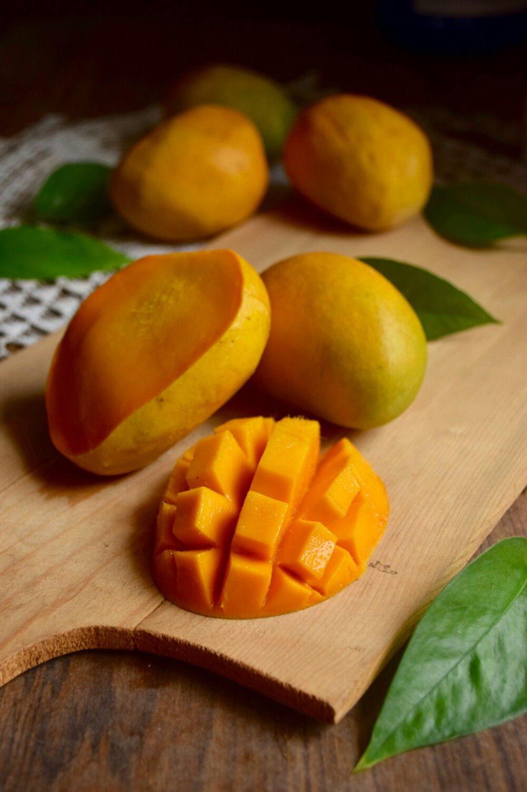
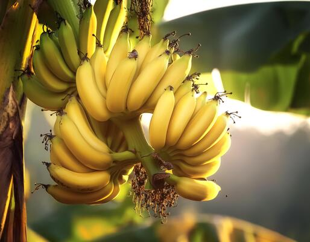

My Favorite Fruits
Here are some tasty and healthy fruits I really like.
Top 3 Fruits
- Mango
- Banana
- Apple
Fruit Images
 
Learn More ...
To know more about healthy fruits, visit this article.
Here are some tasty and healthy fruits I really like.
To know more about healthy fruits, visit this article.